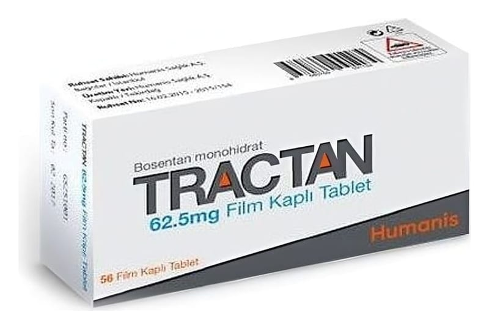

Tractan 62.5 mg Film Kaplı Tablet, 56 Adet

Ne için kullanılır
KT · Bölüm 1TRACTAN, 62.5 mg bosentan içeren tabl etle r şeklinde he r bir kutuda 56 adet olarak satılır. TRACTAN 62.5 mg tabl etle r açık pembe, yuvarlak, bikonveks, film kaplı tabletlerdir.
TRACTAN tabletle r kan damarlarının daralmasına sebe p olan endotelin-l adlı hormonu bloke ede n bosentan içerir. TRACTAN bu sebe ple kan da marlanın genişlemesine sebe p olur ve "endotelin reseptör a ntagonisti" de nilen ilaç g rubuna dahildir.
TRACTAN aşağıdaki hastalıkların teda visinde kullanılır: ● Pulmoner ar teriyel hipertansiyon (PAH): PAH, akc iğerlerdeki ka n da marlarının şiddetli daralması sonucu kalpten akc iğerlere kan taşıyan da marlarda (pulmoner arterler) yüksek ka n basıncı ile sonuçlana n bi r hastalıktır. Bu basınç akciğerlerden ka na geçecek oksijeni azaltarak fiziksel aktiviteyi zor laştır maktadır. TRACTAN, pulmoner arterleri genişleterek ka lbin bu da marlara kan pompalamasını kolaylaştırır. Bu da ka n basıncını düşürür ve belirtileri hafifletir.
TRACTAN pulmoner arteriyel hipertansiyonlu (PAH) sınıf II, III ve IV hastaların tedavisinde egzersiz ka pasitesini (fiziksel aktivite yapa bilme yeteneği) ve semptomları iyileştirmede kullanılır.
TRACTAN’ın kullanılabildiği PAH tipleri: ● P rimer (tanımlanmış bir s ebe p yok ya d a a ile sel) ● Sklerodermanın sebep olduğu (sistemik skleroz olarak da tanımlana n cilt ve diğer organları destekleyen bağ dokusunun anormal büyümesi şeklindeki hastalık) ● Kalp ve akc iğerlerde anormal ka n akımına sebe p olan doğumsal şantlı (anormal geçiş) ka lp kusurlarının sebe p olduğu
Dijital ülserler: (El ve ayak parmaklarındaki yaralar) Sklerodermalı yetişkin hastalarda gör ülen dijital ülserlerin teda visinde kullanılmaktadır. TRACTAN el ve ayak parmaklarında çıkan yeni dijital ülserlerin sayısını azaltmaktadır.